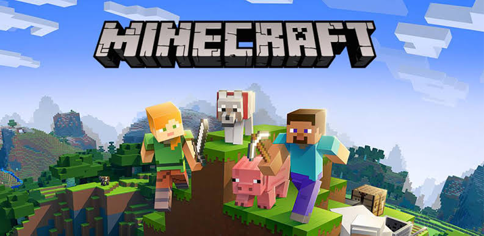

Les jeux vidéo peuvent être utile
Len jeux vidéo permettent d'avoir une meilleure perception visuelle, un meilleur temps de réaction et une meilleure réflexion. À utilisé avec modération.

Les jeux vidéo sont très répandues, divertissants et populaires dans le monde.
Bien que Tetris a vendu 520 millions de copies, ce chiffre cumule des dizaines de versions et d'adaptations sur de nombreuses plateformes depuis les années 1980.
| Aventure | Horreur | Coopération | Action | Plateforme | Rogue-like | Stratégie |
|---|---|---|---|---|---|---|
| Minecraft | The Last of Us | Peak | Cuphead | Super Mario Bros | Dead Cells | Gears Tactics |
| The Legend of Zelda | Resident Evil | It Takes Two | Fortnite | Crash Bandicoot | Hades | Civilization VII |
| Stardew Valley | Lethal Company | Split Fiction | Counter Strike | Hollow Knight | The Binding of Isaac | Desperados III |
| Assassin's Creed | Silent Hill | Unravel Two | Doom | Celeste | Rogue Legacy | Wargame: Airland Battle |
| Detroit: Become Human | Outlast | Overcooked | Halo | Rayman | Risk of Rain | R.U.S.E. |
| Tomb Raider | Alien: Isolation | A Way Out | Call of Duty | Sonic the Hedgehog | Don't Starve | Command & Conquer |
| Stray | Five Nights at Freddy's | Phogs! | Sifu | Geometry Dash | Cult of the Lamb | Napoleon: Total War |
Len jeux vidéo permettent d'avoir une meilleure perception visuelle, un meilleur temps de réaction et une meilleure réflexion. À utilisé avec modération.